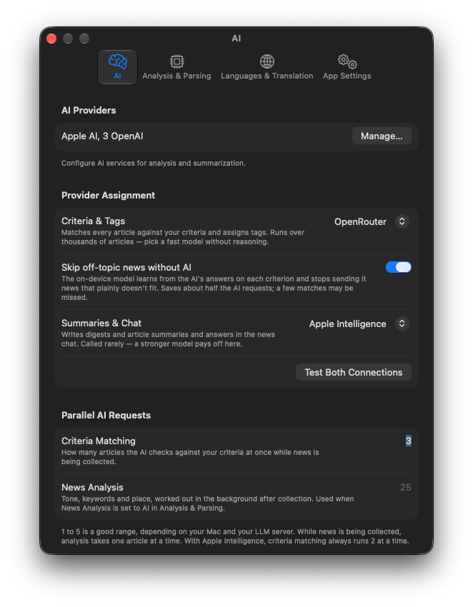
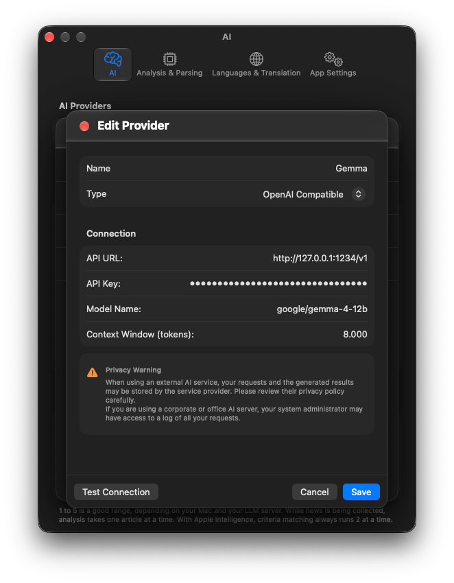

Handbook · AI and processing
Choosing an AI
Apple Intelligence, a local model in LM Studio or a cloud service: what to pick and how to connect it.
Much of InfoBubble runs without any AI: fetching, the Reader feed, tags, sentiment and places (an on-device model), search, the map, keyword tabs, translation and export. An AI is needed for AI Search prompts, Summaries, Chat and filling in word forms.
The options
| Apple Intelligence | Built in, private, free, nothing to set up. Works on Apple Silicon Macs where Apple Intelligence is turned on. The model is small: fine for summaries in its supported languages, weaker at judging subtle criteria. Assigned to both jobs automatically if available. |
|---|---|
| Local model (LM Studio, Ollama) | Free and private, runs on your Mac; needs 16 GB of RAM or more. A good mid-size model reads the news much better than Apple's. Step-by-step: Local AI with LM Studio. |
| Cloud service | Any OpenAI-compatible API. The strongest models, paid per use; article text is sent to that service. |
Add a provider
- Open InfoBubble → Settings → AI and click Manage… under AI Providers.
- Add Provider, give it a Name and choose a Type: OpenAI Compatible or Apple Intelligence.
- For OpenAI Compatible fill in API URL, API Key (leave empty for a local server), Model Name and Context Window (tokens), then press Test Connection.


Assign providers to jobs
Under Provider Assignment there are two pickers, so you can mix:
- Criteria & Tags: checks every article against your AI Search prompts. Called very often, so pick a fast model without reasoning.
- Summaries & Chat: called rarely, reads a lot. A stronger model pays off here.
Choosing — Not Selected — turns AI fully off for that job. Test Both Connections checks both.
Other AI settings
- Skip off-topic news without AI: see AI Search criteria.
- Parallel AI Requests: how many articles are sent at once. Lower it if a local server struggles.
- Clear Cache: forget stored AI answers, e.g. after switching to a better model.
Questions or problems? Open an issue in the
GitHub repository.